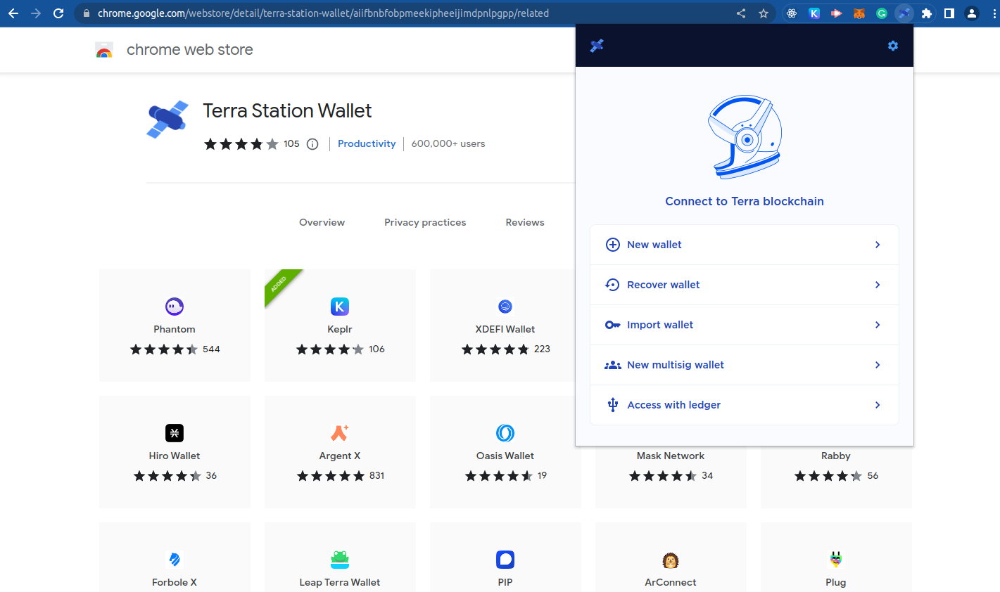

Station Wallet
has become a recognizable name in the world of digital
payments and crypto-adjacent finance. But depending on
where you’ve heard the term, “Station Wallet” can mean
different things—sometimes a specific wallet app or
service, and other times a brand name used by a platform
connected to transactions, rewards, or on-chain
activities. Because the name is used in more than one
context, this article focuses on the general concept of a
“station wallet”: a wallet designed to help users store
value safely, manage balances, and complete payments—often
with added features such as swaps, transfers, account
controls, and user-friendly tracking.
If you
tell me which Station Wallet you mean (app website link,
provider name, or where you saw it), I can tailor the
article precisely. For now, here’s a strong, long-form
article you can use as-is.
A
station wallet
is a digital wallet used to hold and manage money—whether
that money is represented in traditional currency
equivalents, stablecoins, or other digital assets. The
“station” idea is useful because it suggests a central
hub: users come to the station to store value, receive
funds, send funds, and manage day-to-day activity.
In
most wallet designs, the wallet acts as an interface
between the user and a broader payment or blockchain
network. The network could be a public blockchain (like
Ethereum or others), a layer-2 system, or a payment system
that handles transfers and settlement. The wallet itself
usually provides:
A balance view (so users can
see funds available)
Receiving addresses or accounts
(so others can send funds to you)
Sending tools (so
you can transfer funds)
Transaction history (so you
can track where money went)
Security controls (so you
can protect access)
Station Wallet is likely
branded around that “central hub” approach, making it
easier for users to manage value without needing to
understand the underlying infrastructure.
Even when wallet services differ, users tend to look for a
few consistent features. Here are the main ones you’d
typically find in a station-style wallet platform.
a)
Balance Management
A wallet should show balances
clearly. This includes:
Total balance
Available
balance
Asset breakdown (if multiple tokens are
supported)
Estimated value in a common currency
(sometimes)
A good station wallet makes it easy to
understand “what I have right now” and “what I can
use.”
b) Send and Receive
This is the
heart of every wallet. Sending generally includes:
Choosing
the asset/token
Entering recipient address or
account
Selecting amount
Reviewing transaction
details
Confirming
Receiving usually includes
generating a receive address or QR code. Many station
wallets are designed to make receiving quick and
user-friendly so users can share payment info
confidently.
c) Transaction History
Users
also need transparency. A transaction history should
include:
Date and time
Type
(send/receive/transfer/swap)
Amounts
Network
fees (if relevant)
Status
(pending/confirmed/failed)
Transaction identifiers
(sometimes with “view on explorer” options)
This
matters for both accounting and troubleshooting.
d)
Security and Access Controls
Wallet security features
vary by design, but the most common include:
Password
or PIN protection
Seed phrase backup (if
non-custodial)
Biometric login (if the app supports
it)
Withdrawal approvals or confirmations (in some
systems)
Device management or login alerts
Security
is one of the biggest reasons people choose one wallet
over another.
One of the most important concepts for any
wallet—including a station wallet—is whether it is
custodial or non-custodial.
Custodial
Wallets
In a custodial wallet, the service provider
controls certain aspects of the account. Users may still
have passwords and security steps, but the platform
typically holds the keys or manages recovery.
Pros:
Easier
onboarding
Account recovery options often exist
Less
user responsibility for backups
Cons:
Users
depend on the company for security and access
Withdrawal
or policy restrictions may apply
If the provider has
issues, users could be impacted
Non-Custodial
Wallets
In a non-custodial wallet, users control the
private keys (directly or through secure mechanisms).
Often, the user has a seed phrase used to recover the
wallet.
Pros:
Higher user control
Reduced
reliance on a single company
Potentially more
privacy
Cons:
If users lose the seed
phrase, they may lose access permanently
Recovery may
be harder if something goes wrong
A station wallet
could be either type. Understanding which one you’re using
is essential before you deposit significant funds.
Station wallets usually serve multiple roles beyond simple
transfers.
a) Everyday Payments and
Transfers
Some users treat wallets like a convenient
“account” for digital payments. They may:
Pay
others for services
Transfer funds between
contacts
Set up routine payments
b) Managing
Crypto Assets
If the wallet supports crypto assets,
users often use it for:
Storing tokens
Receiving
assets from exchanges or other wallets
Moving assets
between platforms
Monitoring holdings
c) Trading
and Swapping
Many modern wallets integrate features
such as:
Token swaps
On-chain swaps or
exchange routing
Price quotes and estimated
outcomes
If Station Wallet includes swaps, it becomes
more like a financial workstation than a simple storage
tool.
d) Rewards, Events, or Ecosystem Tools
Some
“station” brands are tied to communities, networks, or
platforms where:
Users earn rewards
Receive
payouts
Access exclusive features
Track progress
or entitlements
That’s why station wallets can feel
“platform-first”—they’re designed around a specific
ecosystem.
If you’re using a station wallet, security shouldn’t be an
afterthought. Here are practical habits that reduce
risk.
Use Strong Authentication
If the
wallet supports:
A long password
PIN codes
with secure selection
Biometrics
Use them. Also
avoid reusing passwords from other sites.
Backup
the Right Way
If the wallet provides a seed
phrase:
Store it offline
Keep it
private
Never share it with anyone
Treat it like
cash and never like an ordinary password.
Watch
Out for Scam Behavior
A common threat in wallet
ecosystems includes:
Fake “support” pages
Phishing
emails claiming you must act urgently
Social
engineering (“your wallet is compromised” messages)
Good
safety rule: if you didn’t initiate it, assume it might be
a scam.
Double-Check Addresses
Wallet
transfers can be unforgiving. Before sending:
Confirm
recipient address carefully
Confirm network/asset
type
Verify amount and fees
Mistakes can be
difficult or impossible to reverse.
A station wallet may charge:
Network fees
(especially for blockchain transactions)
Platform
fees (if it supports swaps or conversion)
Withdrawal
or service fees (depending on design)
Users often
underestimate fees because they’re not always obvious. For
example:
Network congestion can raise fees
Some
tokens require different fee structures
Certain
operations (swaps, routing, bridging) may cost more than
basic transfers
If Station Wallet supports multiple
networks, fees can vary drastically. Before making
frequent transfers, it’s smart to test with a small amount
to learn how it behaves.
Beyond security and features, wallet usability matters a
lot. A station wallet often stands out when it offers:
Clean
design: easy to read balances and transaction status
Speed:
quick loading and responsive actions
Clarity: clear
labels for addresses, networks, and fees
Guidance:
tutorials, tooltips, and onboarding help
Reliability:
stable performance and accurate transaction history
The
best wallets reduce the “stress factor” of financial
actions. When users feel confident, they make fewer
mistakes.
Even with good wallets, issues can happen. Here are some
of the most common categories:
a) Pending
Transactions
Sometimes transactions remain pending
due to network delays. Users may worry because the balance
might not reflect the final status. A good station wallet
will show:
Pending vs confirmed states
Links
to transaction explorers (if supported)
b) Wrong
Network or Asset Type
Sending the right amount to the
wrong network is a frequent error. Wallets can reduce this
with warnings and network selectors, but users must still
double-check.
c) Address Formatting
Confusion
Some systems use different address formats
(or require memo/tag fields). If your station wallet
supports assets that require extra fields, missing them
can cause transfer failures.
d) Account Access
Issues
If you forget passwords (custodial vs
non-custodial matters), recovery may vary. Users should
secure account access early and avoid last-minute fixes.
A station wallet can be suitable for different types of
users:
Beginners: If it has a friendly
interface, clear guidance, and strong security
Casual
users: People who want an easy way to send and receive
funds
Crypto participants: If it supports tokens,
swaps, and strong operational visibility
People in an
ecosystem: Users who earn or spend through a specific
platform
However, anyone depositing significant funds
should do due diligence:
Confirm custodial
status
Review security features
Understand
backups and recovery
Learn transaction fees and
network support
A station wallet is best understood as a centralized place
to manage value—whether that value is used for transfers,
storage, swaps, or platform activities. Its purpose is to
reduce friction: making it simple to receive funds, send
funds, track history, and secure access.
But
the true success of a station wallet depends on more than
aesthetics. The most important elements are:
transparency
(clear transaction information),
safety (custodial
and non-custodial considerations, backups, and scam
resistance),
reliability (stable operations and
accurate balances),
and usability (a design that
helps users avoid mistakes).
If you want, tell me:
the
country you’re in (or confirm you’re in the U.S.),
the
exact Station Wallet name (or paste the app/provider
name),
whether you want it more “crypto-focused” or
“general payment wallet,”